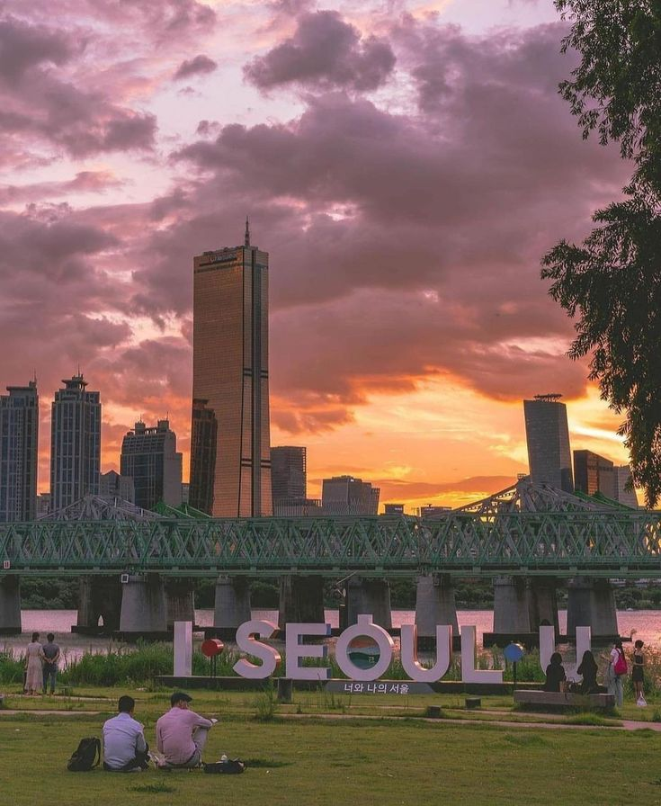
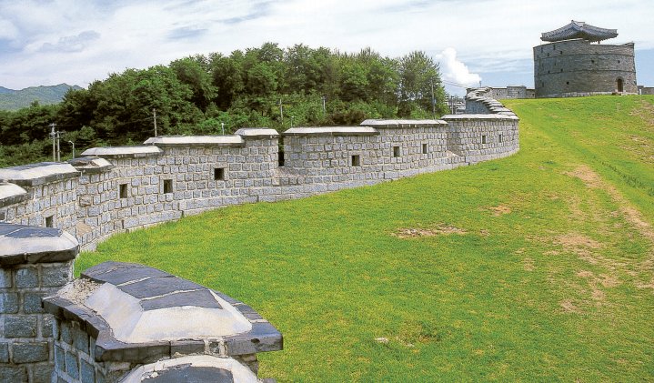
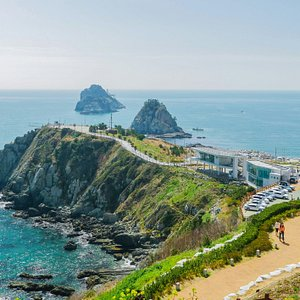
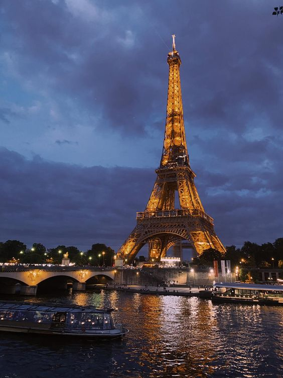
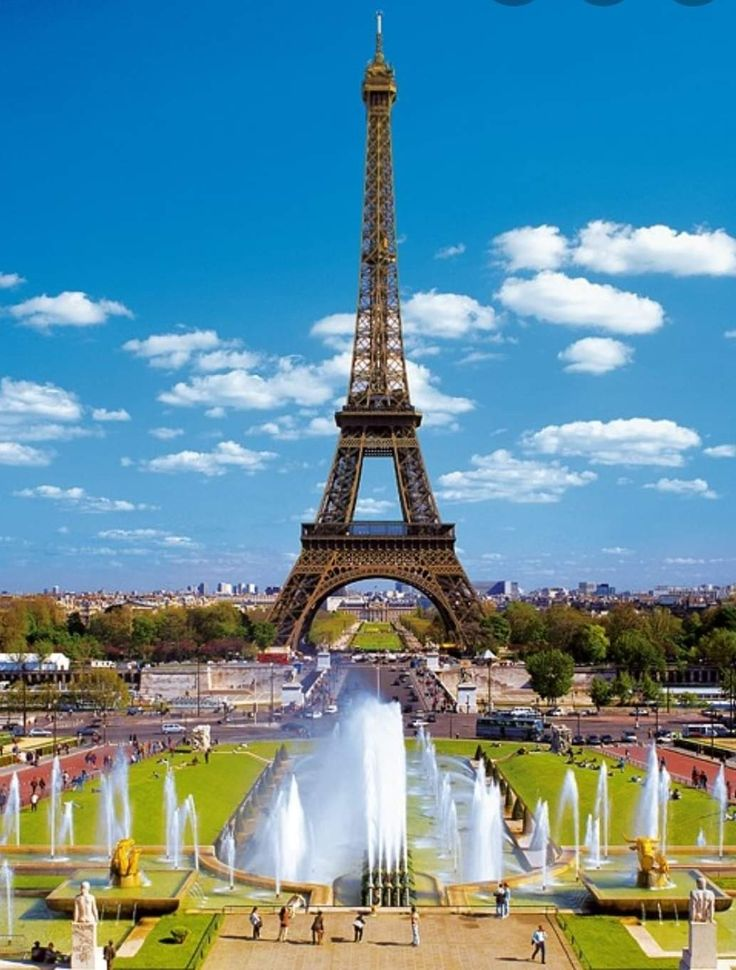
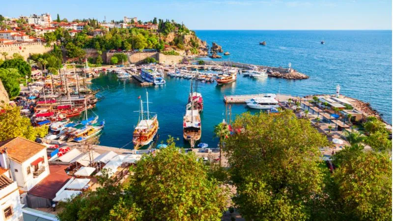
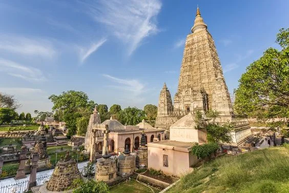

Explore the rich history, culture, and breathtaking landscapes of Italy.
Top Destinations
Rome
Explore the ancient ruins and vibrant culture of the Eternal City.
Venice
Glide through the canals and get lost in the charming streets.
Florence
Admire the Renaissance art and architecture in the Cradle of Renaissance.
Amalfi Coast
Bask in the sun and enjoy the stunning cliffside towns.
Culture and Cuisine
Culture
Immerse yourself in the rich culture and exquisite cuisine of Italy, a country renowned for its art,
history, and culinary excellence. Italy's cultural heritage is a vibrant tapestry of traditions, from
the grandeur of the Roman Empire to the artistic brilliance of the Renaissance. Wander through the
ancient ruins of Rome, marvel at the art in Florence's Uffizi Gallery, and experience the romance of
Venice's canals. Italy's cultural landscape is further enriched by its diverse regional traditions, each
offering unique customs, festivals, and dialects..
Cuisine
Italian cuisine, celebrated worldwide, is a harmonious blend of fresh ingredients, simple preparation,
and rich flavors. Each region boasts its own culinary specialties. In the north, savor creamy risottos,
hearty polenta, and rich cheeses. Central Italy offers iconic dishes like pasta carbonara, Florentine
steak, and porchetta. The south is famous for its tomato-based sauces, fresh seafood, and dishes like
pizza Margherita and pasta alla Norma. Sicily and Sardinia add their unique flavors with influences from
their distinct histories.
Explore the Destination
Discover the top attractions, activities, and hidden gems in this beautiful destination.
Top Attractions
Colosseum
Trevi Fountain
Vatican City
Pantheon
Popular Activities
Gondola Rides
Cooking Classes
Wine Tasting
Hiking the Amalfi Coast

Discover the Beauty of South-Korea
Explore the rich history, culture, and breathtaking landscapes of South-Korea.
Top Destinations
Changdeokgung Palace
Unlock the secrets of the Joseon dynasty and create memories that will last a lifetime.

Seokguram Grotto and Bulguksa Temple
Visit Seokguram Grotto and Bulguksa Temple: Where Spirituality Meets Heritage.
Seoul
Embark on a journey to Seoul and create unforgettable memories.

Busan
Visit Busan: Where the Mountains Meet the Sea. Your coastal adventure begins here.
Culture and Cuisine
Culture
Immerse yourself in the vibrant and dynamic world of Korea, where ancient traditions meet modern
innovations in a captivating blend. Wander through historical treasures like the majestic Gyeongbokgung
Palace and serene Bulguksa Temple, experiencing the rich tapestry of Korea’s past.
Cuisine
Korean cuisine is a feast for the senses, offering an unforgettable culinary adventure. Start your
journey with the fiery flavors of kimchi, a staple that accompanies every meal, and indulge in the
diverse array of banchan, small side dishes that add variety and excitement to your dining experience.
Explore the Destination
Discover the top attractions, activities, and hidden gems in this beautiful destination.
Top Attractions
N Seoul Tower
Myeongdong Shopping Street
Bukchon Hanok Village
Insadong
Popular Activities
Seoul City Sightseeing Tour Including Gyeongbokgung Palace, N Seoul Tower
Cooking Classes
History and Culture Tour
History Tour of Gyeongju from Busan
Discover the Beauty of Brazil
Explore the rich history, culture, and breathtaking landscapes of Brazil.
Top Destinations
Iguaçu National Park
Iguaçu National Park: Home to Majestic Waterfalls and Rare Wildlife.
Rio de Janeiro
Experience the breathtaking beauty and vibrant culture of Rio de Janeiro, a city that harmoniously blends
natural wonders with urban charm.
Sao Paulo
Immerse yourself in the dynamic energy of São Paulo, Brazil's largest city and a hub of cultural,
economic, and artistic activity.
Paraty
Paraty: A Coastal Haven of History and Beauty.
Culture and Cuisine
Culture
Brazil's cultural heritage is a colorful blend of indigenous, African, and Portuguese influences,
reflected in its music, dance, and celebrations. Experience the energy of Carnival, the world's largest
street party, where samba rhythms and dazzling costumes create a spectacle like no other. Explore the
artistic expressions of Brazil in its traditional capoeira martial art, the melodious bossa nova music,
and the expressive rhythms of samba and furor.
Cuisine
Brazilian cuisine is as diverse and dynamic as its culture. Each region offers unique flavors and
culinary traditions. In the northeast, enjoy dishes like acarajé (black-eyed pea fritters) and moqueca
(a rich seafood stew). The southeast is famous for feijoada, a hearty black bean and pork stew
considered Brazil's national dish. Southern Brazil is known for its churrasco, a style of barbecuing
large cuts of meat, often enjoyed at rodizio-style steakhouses where servers bring a continuous array of
grilled meats to your table.
Explore the Destination
Discover the top attractions, activities, and hidden gems in this beautiful destination.
Top Attractions
Iguazu Falls
Corcovado - Christ the Redeemer
Parque Ibirapuera
Copacabana Beach
Popular Activities
Panoramic Helicopter Flight over Iguassu Falls
Christ Redeemer, Sugarloaf, City Tour & Barbecue Lunch
Tour Of São Paulo Including Its Major Attractions
wildlife watching in Pantanal

Discover the Beauty of France
Explore the rich history, culture, and breathtaking landscapes of Brazil.
Top Destinations
The Palace and Park of Fontainebleau
mmerse yourself in the grandeur and natural beauty of the Palace and Park of Fontainebleau.

The banks of the Seine
Bank of Seine: Unveil the Magic of Paris.
Strasbourg
Uncover the magic of Strasbourg and let its enchanting riverbanks captivate your senses.
Colmar
Immerse yourself in the enchanting beauty of Colmar.
Culture and Cuisine
Culture
France's cultural offerings are equally impressive. The country's art and architecture are showcased in
world-famous museums like the Louvre and Musée d'Orsay, and in historic sites such as the Gothic
cathedrals of Notre-Dame and Chartres.
Cuisine
France is a culinary and cultural haven, offering travelers a delightful blend of gourmet experiences and
rich heritage. French cuisine is world-renowned, with each region boasting its own specialties. From the
freshly baked baguettes and buttery croissants found in every boulangerie to the decadent pastries like
éclairs and macarons in patisseries, the French dedication to quality and flavor is evident..
Explore the Destination
Discover the top attractions, activities, and hidden gems in this beautiful destination.
Top Attractions
Eiffel Tower
Louvre Museum
Musée d'Orsay
Arc de Triomphe
Popular Activities
Eiffel Tower Tour
Discover Historical Sites
Experience French Wine and Cuisine
Relax on French Riviera Beaches
Discover the Beauty of Turkey
Explore the rich history, culture, and breathtaking landscapes of Turkey.
Top Destinations

Antalya
Escape to Antalya, where the sun-drenched beaches, azure waters, and ancient history come together.
Cappadocia
Cappadocia, where otherworldly landscapes, ancient cave dwellings, and breathtaking adventures await.
Istanbul
Step into Istanbul, a city where the ancient and the modern converge to create an extraordinary
experience.
Muğla
Uncover the charm of Muğla, a picturesque province on Turkey’s southwestern coast.
Culture and Cuisine
Culture
Dive into the heart of Turkey and savor a culinary adventure like no other. Indulge in a feast of vibrant
flavors with traditional dishes such as savory kebabs, flaky börek, and sweet baklava, each offering a
taste of Turkey's rich history and diverse influences
Cuisine
Celebrate traditional festivals that light up the country with joy and unity, and witness the artistic
beauty of Turkish crafts, music, and dance. Turkey’s unique cultural heritage and dynamic present offer
an unforgettable adventure for the senses.Embrace the timeless charm of Turkey’s extraordinary culture!.
Explore the Destination
Discover the top attractions, activities, and hidden gems in this beautiful destination.
Top Attractions
Pamukkale
Blue Mosque (Sultan Ahmed Mosque) – Istanbul
Mardin
Troy
Popular Activities
Hot Air Balloon Ride in Cappadocia
Visit Istanbul's Historic Sites
Hike the Lycian Way
Explore Antalya's Old Town (Kaleiçi)
Discover the Beauty of Nepal
Explore the rich history, culture, and breathtaking landscapes of Nepal.
Top Destinations
Ghandruk
Ghandruk: Your Gateway to Himalayan Beauty and Culture.
Kathmandu Durbar Square
Step into Kathmandu Durbar Square, a historical and cultural gem in the heart of Nepal's capital city. .
Lumbini
Explore Lumbini, Nepal's most revered pilgrimage site and the birthplace of Siddhartha Gautam.
Pokhara
Discover the natural beauty, cultural richness, and exhilarating experiences that await you..
Culture and Cuisine
Culture
Discover the enchanting culture and cuisine of Nepal, a land nestled in the heart of the Himalayas.
Beyond its breathtaking landscapes and the iconic Mount Everest, Nepal offers a rich cultural heritage
that is both vibrant and diverse. Experience the magic of Nepal's festivals, where colorful celebrations
like Dashain and Tihar fill the air with joy and music. Explore the intricate art and architecture in
Kathmandu Valley, home to UNESCO World Heritage Sites such as Swayambhunath and Pashupatinath.
Cuisine
Nepali cuisine is a delightful fusion of flavors that will tantalize your taste buds. Savor the national
dish, Dal Bhat, a wholesome meal of lentil soup, rice, and seasonal vegetables. Indulge in momos,
chatamari, and sel roti, each dish offering a taste of Nepal's culinary diversity. The cuisine is
enriched with aromatic spices like cumin, coriander, turmeric, and ginger. For an adventurous palate,
street foods such as spicy pani puri and sweet jalebi are a must-try.
Explore the Destination
Discover the top attractions, activities, and hidden gems in this beautiful destination.
Top Attractions
Mount Everest
Pokhara
Lumbini
Chitwan National Park
Popular Activities
Trekking and Hiking
Paragliding
Wildlife Safaris
Cultural Tours
Discover the Beauty of China
Explore the rich history, culture, and breathtaking landscapes of China.
Top Destinations
The great wall of china
Step into the epic grandeur of the Great Wall of China.
The Temple of Heaven
Experience the timeless elegance of the Temple of Heaven, one of Beijing’s most revered landmarks and a
masterpiece of ancient Chinese architecture .
The Terracotta Army, Xi'an
explore the Terracotta Army, one of China’s most extraordinary archaeological finds and a UNESCO World
Heritage site.
Potala Palace
Embark on a journey to the heart of Tibetan culture and spirituality.
Culture and Cuisine
Culture
Chinese festivals are colorful and vibrant, with the Chinese New Year being the most significant. Other
major festivals include the Mid-Autumn Festival, Dragon Boat Festival, and Lantern Festival. These
events are celebrated with traditional foods, dragon and lion dances, lanterns, and fireworks..
Cuisine
Food plays a very important role in Chinese culture because it is closely linked to both traditional
festivals and social events. Chinese food uses a variety of ingredients, sourced from different parts of
the country. Chinese cuisine is also well-known for the richness of its dishes. Furthermore, some
typical dishes are said to have therapeutic properties, so sometimes Chinese food is also used to
alleviate ailments and diseases in Traditional Chinese Medicine.
Although one of their most popular dishes is rice, Chinese cuisine also includes noodles, soups and an
extensive variety of meats and vegetables. As for their sweets, the best known are fortune cookies,
which entertain diners with their hidden proverbs.
Explore the Destination
Discover the top attractions, activities, and hidden gems in this beautiful destination.
Top Attractions
Great Wall of China
Forbidden City
Li River
Huangshan (Yellow Mountains)
Popular Activities
Hike the Great Wall of China
Experience a Traditional Chinese Tea Ceremony
Visit the Giant Pandas in Chengdu
Cultural Tours
Discover the Beauty of Switzerland
Explore the rich history, culture, and breathtaking landscapes of Switzerland.
Top Destinations
Lavaux Vineyard Terraces
Emmerse yourself in the stunning landscapes of the Lavaux Vineyard Terraces, a UNESCO World Heritage
site.
Jungfraujochswitzerland
Embark on an unforgettable journey to Jungfraujoch, the highest railway station in Europe.
Lausanne
Explore the Charm of Lausanne: Switzerland’s Vibrant Lakeside City.
Basel
Dive into the vibrant culture, rich history, and artistic flair of Basel.
Culture and Cuisine
Culture
Switzerland's festivals are a celebration of its diverse culture and traditions. Immerse yourself in the
vibrant carnival of Fasnacht in Basel and Lucerne, with parades, elaborate costumes, and traditional
music filling the streets.
Cuisine
Start your culinary journey with Switzerland's famous cheeses like Emmental, Gruyère, and Appenzeller.
Experience the warmth of a fondue party, where you dip bread into a pot of melted cheese mixed with wine
and garlic, or savor Raclette, where melted cheese is poured over potatoes, pickles, and onions.
Explore the Destination
Discover the top attractions, activities, and hidden gems in this beautiful destination.
Top Attractions
Bern
Zurich
Montreux
Grindelwald
Popular Activities
Skiing and Snowboarding
Hiking and Trekking
Lake Cruises
Visiting Alpine Peaks
Discover the Beauty of India
Explore the rich history, culture, and breathtaking landscapes of India.
Top Destinations
Taj Mahal, Agra
Immerse yourself in the awe-inspiring grandeur of the Taj Mahal, one of the most celebrated and
recognizable landmarks in the world.
Khajuraho
Uncover the fascinating world of Khajuraho, a UNESCO World Heritage site renowned for its stunning
temples adorned with intricate sculptures.

Bodh Gaya, Bihar
A profound and historic destination in Bihar, India, where the Buddha attained enlightenment under the
Bodhi Tree.
Ziro
Step into a world of natural beauty and cultural richness with a visit to Ziro.
Culture and Cuisine
Culture
Discover the captivating culture and cuisine of India, a land renowned for its diversity and vibrancy.
India's rich cultural heritage is a tapestry woven from centuries of history, traditions, and customs.
From the colorful festivals like Diwali, Holi, and Navratri to the classical music and dance forms such
as Bharatanatyam, Kathak, and Carnatic music, India's cultural landscape is as varied as it is vibrant.
Cuisine
Indian cuisine, much like its culture, is incredibly diverse and flavorful. Each region boasts its own
unique culinary traditions and specialties. In the north, savor the rich and creamy curries like butter
chicken and paneer tikka, accompanied by naan and roti. The south offers a completely different palate
with dishes like dosa, idli, and sambar, characterized by their use of coconut, tamarind, and curry
leaves. The east is famous for its sweets, such as rasgulla and sandesh, while the west is known for its
spicy and tangy flavors in dishes like pav bhaji and dhokla.
Explore the Destination
Discover the top attractions, activities, and hidden gems in this beautiful destination.
Top Attractions
Taj Mahal
Qutub Minar
Red Fort
Goa Beaches
Popular Activities
Exploring Historical Monuments
Attending Festivals and Cultural Events
Experiencing Indian Cuisine
Shopping for Traditional Crafts and Souvenirs
Discover the Beauty of Australia
Explore the rich history, culture, and breathtaking landscapes of Australia.
Top Destinations
Opera House
Step into the world of sophistication and grandeur with a visit to a renowned Opera House.
Rottnest Island
Nestled off the coast of Perth, Australia, Rottnest Island is a stunning getaway that offers pristine
beaches, crystal-clear waters, and unique wildlife.
Royal Exhibition Building and Carlton Gardens
The Royal Exhibition Building and Carlton Gardens in Melbourne, Australia, offer a unique blend of
historical grandeur.
Uluru
Uluru, also known as Ayers Rock, is one of Australia’s most iconic landmarks.
Culture and Cuisine
Culture
Discover the captivating culture and cuisine of India, a land renowned for its diversity and vibrancy.
India's rich cultural heritage is a tapestry woven from centuries of history, traditions, and customs.
From the colorful festivals like Diwali, Holi, and Navratri to the classical music and dance forms such
as Bharatanatyam, Kathak, and Carnatic music, India's cultural landscape is as varied as it is vibrant.
Cuisine
Indian cuisine, much like its culture, is incredibly diverse and flavorful. Each region boasts its own
unique culinary traditions and specialties. In the north, savor the rich and creamy curries like butter
chicken and paneer tikka, accompanied by naan and roti. The south offers a completely different palate
with dishes like dosa, idli, and sambar, characterized by their use of coconut, tamarind, and curry
leaves. The east is famous for its sweets, such as rasgulla and sandesh, while the west is known for its
spicy and tangy flavors in dishes like pav bhaji and dhokla.
Explore the Destination
Discover the top attractions, activities, and hidden gems in this beautiful destination.
Top Attractions
Sydney Opera House, New South Wales
Great Barrier Reef, Queensland
Uluru (Ayers Rock), Northern Territory
Great Ocean Road, Victoria
Popular Activities
=Snorkeling and Diving at the Great Barrier Reef
Wine Tasting in the Barossa Valley
Exploring Uluru and Kata Tjuta
Climbing the Sydney Harbour Bridge
Discover the Beauty of Japan
Explore the rich history, culture, and breathtaking landscapes of Japan.
Top Destinations
Itsukushima Shrine
Discover the Timeless Beauty and Sacred Atmosphere of Itsukushima Shrine.
mountfuji
Experience the Awe-Inspiring Beauty and Cultural Significance of Mount Fuji.
Kamikochi, Nagano
Whether you are seeking adventure, tranquility, or a chance to reconnect with nature, Kamikochi provides
an unforgettable experience.
Shirakawa-go, Gifu prefecture
Whether you're fascinated by traditional architecture, enchanted by scenic beauty, or interested in
cultural heritage, Shirakawa-go offers an unforgettable experience.
Culture and Cuisine
Culture
Japan has a fascinating and multifaceted culture; on the one hand it is steeped in the deepest of
traditions dating back thousands of years; on the other it is a society in a continual state of rapid
flux, with continually shifting fads and fashions and technological development that constantly pushes
back the boundaries of the possible. This is part of what makes it such a fascinating country to visit.
Cuisine
Traditional Japanese food, known as washoku, is one of the most diverse and fascinating of world
cuisines. Seasonally sensitive Japanese dishes, developed over centuries behind the closed doors of this
formerly isolationist nation, are now celebrated on the global gourmet scene for their inventiveness,
healthiness, and heritage—as well as their presentation
Explore the Destination
Discover the top attractions, activities, and hidden gems in this beautiful destination.